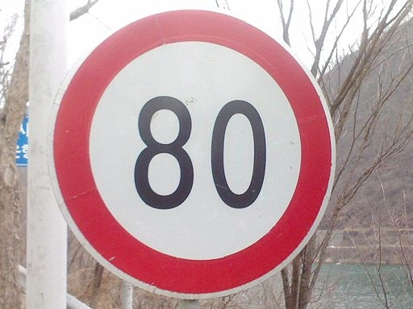

RSI-Jev
System One models, built by AI scientists.
AutoScientists, our AI research agents, propose each change, predict its result before running it, and retire their own champions. Every release and every failed experiment is published.
How it’s built
The agents run the research.
Each change starts as a hypothesis and ends as a release or a published failure.
- HypothesisAn agent proposes a change: new data, a new loss, a new architecture.
- PredictionIt writes down the result it expects before any GPU time is spent.
- ExperimentIt trains the change and measures it against the current champion.
- Keep or retireA winner becomes the next release. Everything else is published with its numbers.
How each release was madeEvery experiment, and why it failed
What the models do
One pass. A probability for every answer.
A System One model reads the question and decides. It writes no text and spends no reasoning tokens, so there is nothing to parse.

Which speed limit number is written on the object in the image?
A chat model writes instead:{"speed_limit": "80"}11 tokens · 333 ms · no probability
Recorded with v4.0-VL 2B on one GB10. The chat model is Qwen3.5-2B, writing its answer as JSON.
POST /v1/systemone. Existing Jev code works once its base URL points here.v6.1-VL 27B · October 8
The same recipe at 27B.
Two fine-tunes of Qwen3.8-27B, averaged, with answer heads at layers 48, 56 and 64. It runs on one 96 GB GPU.
Decision Index: public set, effort auto; 65.46 with effort unset. The official score is pending. The rest at the deepest layer, on the same evaluation sets. Final ECE 0.064, against 0.048 for the 4B.
v6.1-VL 4B · October 7
Two fine-tunes, averaged.
v6.1-VL is the average of v6.0-VL and a second fine-tune of the same base. Nothing was trained after the average; the temperatures were refit.
Both models on the same evaluation sets with the same code, at 32 layers. Calibration is a little worse: final ECE 0.048, against 0.036.
The model on Hugging FaceHow it was made
On the public Decision Index.
Decision Index 0.3, public index, board of 2026-10-06; 4B models and smaller. RSI-Jev: full runs with the pre-release 0.3 kit.
v6.0-VL 4B · October 6
Fast when it’s easy. Deep when it’s hard.
Choose how many layers it uses: 16, 20 or 32, in one pass. Effort is layers, not tokens.
Answers at layer 16 when it is nearly sure, at 20 when it is sure enough, and at 32 otherwise.
Questions with images always use all 32 layers. Every response reports the layer that answered.
Easy questions stop early. Hard ones go deep.
“I need a refund?”
Which intent?
“The woman used a gentle technique when painting the urn but applied more pressure when painting the vase, because the _ was more fragile.”
Urn or vase?
Real outputs of the released model on Decision Index items. BANKING77 is CC BY 4.0; WinoGrande is CC BY.
At release, the best 4B model on the public Decision Index.
v6.0-VL at release: Decision Index 0.2.1, public board of 2026-09-28. Full run, with rows that overlap our training data removed; 14th of 71 overall. Sizes are served parameters.
The release film.
v5.0-VL 3B · October 2
It doesn’t need the whole LLM.
A language model’s deepest layers mostly shape the next word. A System One model never writes, so v5.0-VL keeps only the first 20 of Qwen3.5-4B-Base’s 32 layers.
v4.0-VL 2B · October 1
It reads images.
Send one to four pictures with a request and ask the same typed questions. On five held-out image benchmarks it answered 80.3% correctly; with the images blanked out, 45.8%.
36 decisions · median 76 ms each
Recorded with v4.0-VL, misses marked ✗. Across all 143 items we ran (89 images), 187 of 227 answers were right.
Hover or tap a picture for the full question and every option. Times are whole calls on one GB10. Images: VisA (Zou et al. 2022) and CLEVR (Johnson et al. 2017), CC BY 4.0, resized; road and object photos from Wikimedia Commons via reinhard-z/vision-jev: stop sign, speed sign and bicycle public domain (Dori, P.Ctnt, Ingolfson), teddy, dog, car, bag and pedestrians CC0, boy with ball CC BY 2.0 (Evgeniy Isaev), red and green lights and leaves CC BY-SA 3.0 (Jacklee; Wald1siedel), cat CC BY-SA 4.0 (Grendelkhan). The crops of the CC BY-SA photos are shared under the same licences. Charts, screens, receipt and shapes are ours (CC0). Breakout from hr98w/jev-visual (MIT). Full credits.
Finds factory defects without seeing one.
No defect examples, one photo at a time. You choose where to draw the line.
AUROC on VisA: 50 is a coin flip, 100 is perfect. The same 2,162 photos of 12 kinds of parts for all three. Ours 95% CI 85.1–88.1; the other two are scored from their authors’ published predictions.
Each dot is one photo’s served probability from the benchmark run behind the AUROC, recorded with v4.0-VL. Photos: VisA, Zou et al. 2022, CC BY 4.0. The full gallery, misses included.
It plays Breakout from pixels.
Every frame it gets one screenshot and says which of five lanes the ball is in. The paddle moves there.
Recorded live with v4.0-VL at real speed: 79 ms per round trip, 200 decisions. Game from hr98w/jev-visual (MIT), unchanged.
Before that
Four text releases in four days.
On the same 15-benchmark suite: 0.622, 0.709, 0.736, then 0.756.
- v3.0Sep 28 · 2B
The first release where reinforcement learning helps. It ranks the right memory first 60% more often than its supervised parent (R@1 0.192 → 0.308).
- v2.1Sep 27 · 2B
Better everywhere it was checked. Ahead of v1.0 on three benchmarks it never trained on.
- v2.0Sep 26 · 2B
Trained on decision benchmarks’ train splits. A confidence head rescales every answer without changing which option wins.
- v1.0Sep 25 · 0.8B, 2B
One forward pass, a probability for every option. The zero-shot reference every later release is compared against.
Get started
Three commands.
Install it, serve v6.1-VL on your own GPU, and ask. On a 96 GB GPU, serve v6.1-vl-27b --effort auto instead.
pip install "rsi-jev[fast,vision] @ git+https://github.com/Shanghua-Gao/RSI-Jev"rsi-jev serve v6.1-vl-4b --effort autocurl localhost:8000/v1/systemone -H 'Content-Type: application/json' -d '{
"state": [{"role": "user", "content": "I was charged twice. Please refund."}],
"questions": {"refund": {"type": "noul",
"instructions": "Does the user request a refund?"}}}'Already using Jev? Point your client at http://localhost:8000. For images, add an images list: see the README.